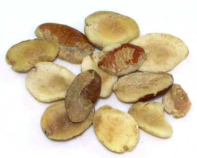

African Bush Mango

[Wild Mango, Bush Mango, Dika; Ogbono (Ibo (kernels)); Agbalo (Hausa);
Oro, Obo, Absebuo, Goron Biri, Moupiki, Muiba, Eniok, Andok (Nigeria);
Afemai (Edo); Apon (Yoruba); Bobo (Sierra Leone); Boboru, Wanini
(Ivory Coast); Andok (Cameroon); Meba, Mueba (Congo);
Irvingia gabonensis]
This tree, growing to 130 feet, is native to West Africa from Senegal to northern Angola, and southwest through the Democratic Republic of the Congo. It is a very economically important tree, bearing small, edible, mango-like green fruits, particularly valued for the seeds they contain. The fruit pulp is made into jams, jellies and drinks, sometimes wine.
The single seed is broken open to release the edible endosperm. this may be eaten raw or roasted, but is commonly ground for use as a flavoring and thickener for soups and stews. The seeds can also be pressed for an oil that is solid at room temperature. This oil can be used for cooking or made into soaps or cosmetics.
Buying: I have purchased the seed kernels on-line from JEB Foods for 2018 US $15.47 for 8 ounces, including shipping.
Health & Nutrition: The seeds of this plant are high in oil (67%) and have significant protein 8.5%.
In the West, this tree is now very much in vogue for reported weight loss benefits from seed extract. This use has not been confirmed by clinical trials, but a meta analysis found it may have "some potential benefit for weight loss". Side effects are headache, flatulence, and difficulty sleeping.
vi_ogbonz 180612 - www.clovegarden.com